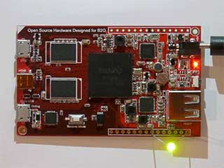

Web × IoT メイカーズハッカソン Web ブラウザー技術でモノを制御！
- – @ Impact HUB Tokyo
- #WebIoTHack
イベントの主旨
センサーやアクチュエーターなどの物理デバイスを、JavaScript や CSS といった Web のコードのみで制御できるオープンソースの開発環境 & 組み込みボード「CHIRIMEN」を使い、ユニークな作品づくりに挑戦していただく「Web × IoT メイカーズハッカソン」を開催します。
Web × IoT メイカーズハッカソンでは、電子部品の制御インターフェイスとして広く用いられている GPIO や I2C を直接操作する低レベル API を備えた CHIRIMEN ボードを題材にするため、ハードウェアの制御をブラウザー技術だけでコントロールする作品づくりがテーマとなります。
さまざまなアイデアやスキルを持つ開発者やメイカーの皆さんが集まり、真剣にものづくりを競い合うこのハッカソンを通して、Web ブラウザー技術の可能性や将来性についての新たな気づきが生まれることを期待しています。
Arduino や Raspberry Pi で工作経験のある方はもちろん、Web のマークアップエンジニアの方、Web デザイナーの方、JavaScript 使いの学生の方も奮ってご参加ください。
開催要旨
PRIZES
- 最優秀賞 1 チーム (賞金 20 万円)
- 優秀賞 1 チーム (賞金 10 万円)
JUDGES
SUPPORTERS
後援
協力
CHIRIMEN について
CHIRIMEN は、センサーやアクチュエーターなどの物理デバイスを Web 技術だけで制御することができるオープンソースの開発環境で、ボードコンピューターとその上で動作するソフトウェアを含めた総称です。ボードコンピューターとしてのハードウェア、その上で動作する Boot to Gecko ソフトウェア、センサーや物理デバイスを JavaScript から制御するための WebGPIO や WebI2C といった低レベル API の実装などが含まれており、日本で誕生した CHIRIMEN Open Hardware というコミュニティによって開発され、CHIRIMEN というコードネームが付けられました。
今回のハッカソンでは、2016 年 9 月にスイッチサイエンス社から販売された CHIRIMEN ボード Echigo Rev.1 を各チームに貸し出し、作品の制作を行っていただきます。
- CHIRIMEN Open Hardware
- CHIRIMEN 日本語ドキュメント (FAQ やクイックスタートガイド、周辺機器情報等)
開催概要
| 日時 | 1 日目: 2 日目: |
|---|---|
| 会場 |
Impact HUB Tokyo 東京都 目黒区 目黒 2-11-3 印刷工場跡地 1 階 [地図] [アクセス] 目黒駅 (JR 山手線西口、東急目黒線・地下鉄南北線・三田線) より徒歩 8 分 |
| 参加費 | 無料 |
| 応募と定員 | 8 チーム (1 チーム 2 名 ～ 5 名まで) 最大 40 名
|
| 同意書と確認書 | 本ハッカソンに参加いただく場合は、以下同意書に同意いただいたものといたします。 |
| 参加の注意事項 |
|
| 参加申し込み方法 | Connpass の お申し込みページ より、チーム代表者の方がまとめてお申し込みください。(お申し込み時のアンケートで各チームメンバーのお名前とメールアドレスをご記入いただきますので、そうした情報をご用意の上お申し込みください。) |
| 応募締切 | 2017 年 2 月 28 日 (定員に達し次第、お申し込みを締め切らせていただきます) |
| 主催 | Web × IoT メイカーズハッカソン実行委員会 |
| 後援 | 総務省、 W3C |
| 協力 | 株式会社三菱総合研究所、 公益財団法人 KDDI 財団、 KDDI 株式会社、 パナソニック株式会社、 富士通株式会社、 株式会社 ACCESS、 株式会社東芝、 Water Design、 CHIRIMEN Open Hardware、 Impact HUB Tokyo |
| 事務局 | 一般社団法人 Mozilla Japan |
| 表彰 | 最優秀賞 1 チーム (賞金 20 万円)、優秀賞 1 チーム (賞金 10 万円) |
| 審査基準 |
|
| 審査員長 |
中村 修 慶應義塾大学 環境情報学部 教授・W3C/Keio サイトマネージャ
1983 年 慶應義塾大学工学部卒業 工学博士、1990 年から東京大学大型計算機センター助手を経て 1993 年慶應義塾大学環境情報学部助手となり、現在慶應義塾大学環境情報学部教授。1987 年から WIDE プロジェクトにてインターネットの研究開発に携わる。広帯域インターネットや IPv6 の研究開発、普及に携わる。2014 年から W3C/KEIO サイトマネージャに就任し、Web 技術の標準化活動を推進する。 |
| 審査員 |
|
詳細
ハッカソン制作物の素材について
- CHIRIMEN ボード Echigo Rev.1 は、ハッカソン当日、各参加チーム各 1 台お貸し出しいたします
- 事前に CHIRIMEN ボードの貸し出しを希望されるチームには、参加申し込み締切後、チームに 1 台お貸し出しいたします (ご希望の場合は、事務局にご連絡ください)。
- CHIRIMEN の周辺機器 (モニター、Wi-Fi ドングル、USB ハブ、電源アダプタ、マウス) は会場にもご用意しています。
- 開発用の PC は各自ご持参ください。
-
今回のハッカソンでは、各チームの作品の制作や開発に関わるセンサーや作品部材の材料費の実費を上限額を決めたかたちで主催者が負担いたします。
[1名あたり 6,000円 (税込)] × [チームの人数] の合計額 がそのチームの材料費の上限額になります。
【例: 2 名チームの場合】上限 税込 12,000 円まで実費精算可能
【例: 5 名チームの場合】上限 税込 30,000 円まで実費精算可能
※ 材料は事前に購入され、当日会場にご持参いただくことができますが、必ずレシートまたは領収書が必要となります。精算方法等詳細については別途、各参加チームの代表者の方にお知らせいたします。 - 主なセンサー類は、当日、ハッカソン会場でも現金販売を行う予定です。
- 会場での半田付け作業は可能です。(半田の数に限りがありますのでお持ちの方はご持参ください)
本ハッカソンにおける Web 国際標準化活動へのフィードバックについて
本ハッカソンの開催を通して得られた Web 技術や API についての意見や具体的なユースケース、課題や解決策などは、開催後に主催者側で取りまとめ、今後の国際標準化活動へのフィードバックとして役立てる予定です。
事前開催 CHIRIMEN Touch & Try イベント
2 月 4 日 (土) に CHIRIMEN コミュニティ主催の 「CHIRIMEN タッチ＆トライ イベント ～ CHIRIMEN Board Echigo Rev.1 を触ってみよう！」が開催されます。Web × IoT メイカーズハッカソンにお申し込み (または参加をお考え) の方で、CHIRIMEN ボードの実機を試したことがないという方は、この機会にお試しいただけます。また、個人で参加を希望される方のチームメイト探しの場としてもご活用ください。
学生向けハッカソン参加のための予備教室
「今回のハッカソンに参加してみたいが、自分のスキルが心配！」という学生の方向けに、ハッカソン開催前に 3 日間 (3/2、3/3、3/11 全 3 回) の予備教室を開催します。対象は、JavaScript の基礎知識がある大学生・専門学校生等の学生の方、5 名 ～ 10 名です。予備教室の受講者は、Web × IoT メイカーズハッカソンに、募集枠とは別枠で学生チームとして参加いただくことができます。 詳しくは、こちらのページ でご案内しております。
当日のスケジュール
| 9:45 – | 受付開始 |
|---|---|
| 10:00 – 11:00 | 開会 / オリエンテーション / 準備 |
| 11:00 – 20:00 | チーム作業 |
| 9:00 – 15:00 | チーム作業 |
|---|---|
| 15:00 – 16:30 | 成果発表 (各チームによる 5 分プレゼン) |
| 16:30 – 17:30 | 休憩 / 参加者ディスカッション (Web 標準技術の課題や意見など) (同時並行) 審査員による審査 |
| 17:30 – 19:00 | 懇親会 / 結果発表 / 講評 / 表彰 / 記念写真 |
よくある質問
電源と Wi-Fi
会場には電源および、本ハッカソン参加者用の Wi-Fi をご用意します。
昼食について
昼食は、各自ご自由にお取りください。(会場内への飲食の持ち込みは可能です)
会場の利用時間について
会場の利用時間は、本ハッカソンの開催時間内に限ります。(泊まりや深夜作業などはできません)
チームメンバーが見つかりそうもないため、個人で参加したいのですが、どうしたらよいでしょうか？
個人での参加を希望される旨、Web × IoT メイカーズハッカソン実行委員会事務局 宛にメールでご連絡ください。応募状況に応じて、4 名以下のチームへの割り振り等ができないかを検討いたします。(ただし、状況によりご参加いただけない可能性もございますのであらかじめご了承ください)
ハッカソンに向けて、情報収集や勉強になるイベントはありますか？
2/4 (土) に CHIRIMEN コミュニティ主催の「CHIRIMEN タッチ＆トライ イベント ～ CHIRIMEN Board Echigo Rev.1 を触ってみよう！」が開催されます。また、「学生向けハッカソン参加のための予備教室」が 3/2、3/3、3/11 に開催されます。